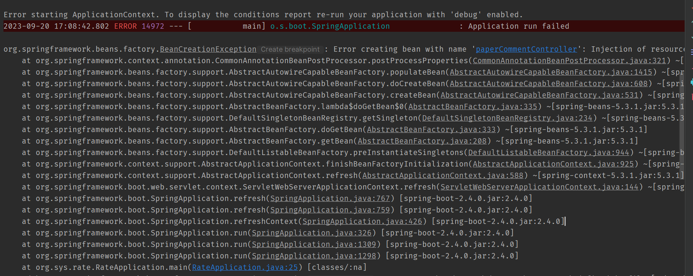
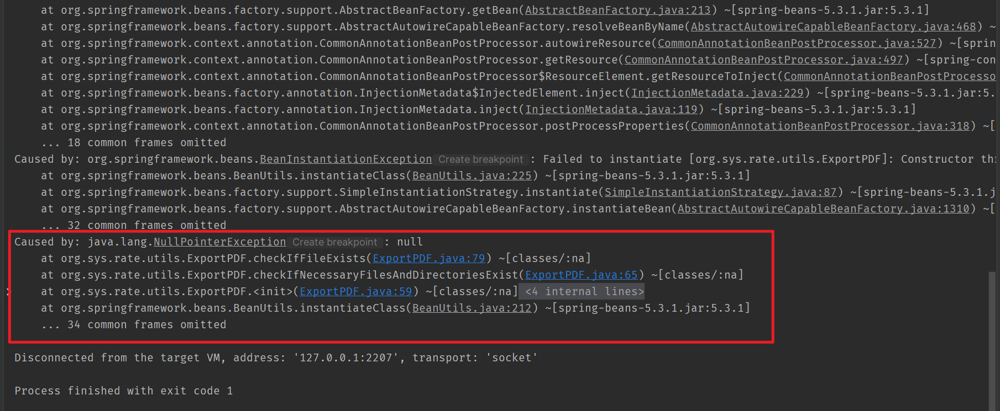
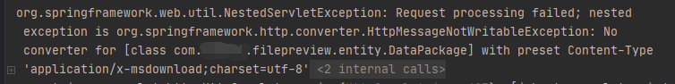
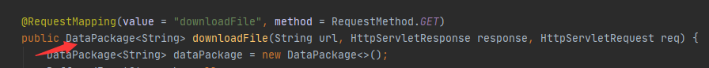
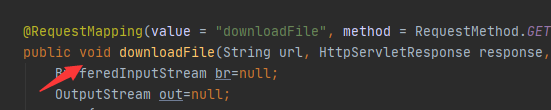
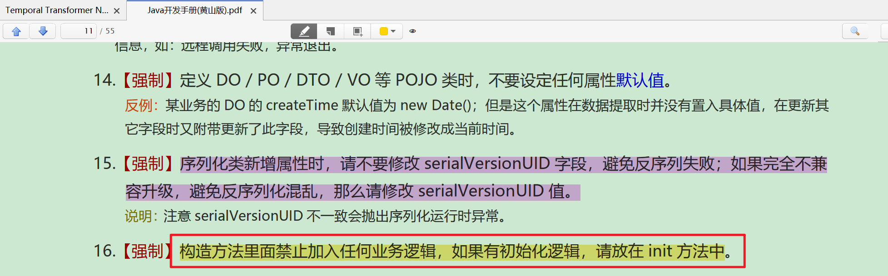

service层报空指针异常
1. 错误信息：


2. 原始代码：
@Slf4j
@Service
public class ExportPDF {
@Resource
private StudentService studentService;
@Resource
private TeacherService teacherService;
@Resource
private PaperCommentService paperCommentService;
@Resource
private EmailErrorLogService emailErrorLogService;
private final static int PRESUMROWS = 17;
private final static int NEXTPLANROWS = 21;
private final static int ONEROWMAXCOUNT = 35;
private final static String DEST = "src/main/resources/exportFiles/";
private final String FONT_PATH_Song = "rate/rateserver/rate-web/src/main/resources/static/template/song.ttf";
private final String TEMPLATE_PATH10 = "rate/rateserver/rate-web/src/main/resources/static/template/template_10.pdf";
private final String TEMPLATE_PATH20 = "rate/rateserver/rate-web/src/main/resources/static/template/template_20.pdf";
private boolean necessaryFilesAndDirectoriesExist;
public ExportPDF() {
this.necessaryFilesAndDirectoriesExist = checkIfNecessaryFilesAndDirectoriesExist();
}
private boolean checkIfNecessaryFilesAndDirectoriesExist() {
boolean directoryResult = checkIfFileExists(DEST, "导出PDF，目录不存在", "目录 " + DEST + " 创建失败！");
boolean fontResult = checkIfFileExists(FONT_PATH_Song, "导出PDF，模版文件不存在", "字体文件 " + FONT_PATH_Song + " 不存在");
boolean template10Result = checkIfFileExists(TEMPLATE_PATH10, "导出PDF，模版文件不存在", "模版文件 " + TEMPLATE_PATH10 + " 不存在！！！");
boolean template20Result = checkIfFileExists(TEMPLATE_PATH20, "导出PDF，模版文件不存在", "模版文件 " + TEMPLATE_PATH20 + " 不存在！！！");
return directoryResult && fontResult && template10Result && template20Result;
}
private boolean checkIfFileExists(String filePath, String errorType, String errorDescription) {
File file = new File(filePath);
if (!file.exists()) {
EmailErrorLog emailErrorLog = new EmailErrorLog();
emailErrorLog.setErrorType(errorType);
emailErrorLog.setErrorDescription(errorDescription);
emailErrorLog.setTimestamp(new Timestamp(System.currentTimeMillis()));
emailErrorLogService.addEmailErrorLog(emailErrorLog);
return false;
}
return true;
}
@Service
public class EmailErrorLogService {
@Resource
private EmailErrorLogMapper emailErrorLogMapper;
public void addEmailErrorLog(EmailErrorLog emailErrorLog) {
emailErrorLogMapper.insert(emailErrorLog);
}
public void updateEmailErrorLog(EmailErrorLog emailErrorLog) {
emailErrorLogMapper.update(emailErrorLog);
}
public void deleteEmailErrorLog(Long id) {
emailErrorLogMapper.delete(id);
}
public EmailErrorLog getEmailErrorLogById(Long id) {
return emailErrorLogMapper.getById(id);
}
public List<EmailErrorLog> getAllEmailErrorLogs() {
return emailErrorLogMapper.getAll();
}
}
代码的作用就是检查资源文件和目录是否存在，若不存在就记录错误信息。报错信息提示的代码是
emailErrorLogService.addEmailErrorLog(emailErrorLog);
3. 错误分析
可能和springboot的初始化顺序有关系：
成员变量初始化 -> Constructor -> @Autowired
4. 解决方案-将文件判断放在每次调用导出PDF函数中
public boolean generatePDF(HttpServletResponse response, Integer thesisID) throws Exception {
if (thesisID == null || thesisID <= 0) {
// 参数校验，确保thesisID有效
return false;
}
if (!checkIfNecessaryFilesAndDirectoriesExist()) {
return false;
}
...
}
下载文件报错
1. 错误复现和解决
点击下载文件时主要报错提示，还是能下载，但是既然抛出错误就去找。最后发现操作的一个错误。。。
org.springframework.web.servlet.mvc.support.DefaultHandlerExceptionResolver : Failure while trying to resolve exception [org.springframework.http.converter.HttpMessageNotWritableException]
java.lang.IllegalStateException: COMPLETED
......
org.eclipse.jetty.server.HttpChannel : /file-api/downloadFile
org.springframework.web.util.NestedServletException: Request processing failed; nested exception is org.springframework.http.converter.HttpMessageNotWritableException: No converter for [class com..filepreview.entity.DataPackage] with preset Content-Type 'application/x-msdownload;charset=utf-8'
at org.springframework.web.servlet.FrameworkServlet.processRequest(FrameworkServlet.java:1014) ~[spring-webmvc-5.3.3.jar:5.3.3]
......
org.springframework.http.converter.HttpMessageNotWritableException: No converter for [class com..filepreview.entity.DataPackage] with preset Content-Type 'application/x-msdownload;charset=utf-8'
看主要的提示：

请求处理失败；嵌套异常为org.springframework.http.converter.HttpMessageNotWritableException:对于预设内容类型为“applicationx msdownload”的[class com.filepreview.entity.DataPackage]没有转换器；字符集=utf-8'
所以看到了关键字：DataPackage，这个是封装的数据返回。 想到的下载文件其实是流的传输，所以删掉了这个封装，方法改成了void类型 输出异常的：

修改之后正常：

2. 进一步研究，前端如何处理void返回但是后端报错
原本的前后端代码：
@GetMapping("/exportPDF")
public void exportDataPDF(@RequestParam Integer thesisID) throws Exception {
exportPDF.generatePDF(response, thesisID);
}
exportPDF() {
this.loading = true;
if (this.thesisID !== null) {
let url = `/paperComment/basic/exportPDF?thesisID=${encodeURIComponent(this.thesisID)}`;
axios.get(url)
.then((resp) => {
this.loading = false;
window.location.href = url;
})
.catch((error) => {
this.loading = false;
console.error("Error exporting PDF:", error);
this.$message.error("导出PDF时发生错误！");
});
} else {
this.loading = false;
this.$message.info("抱歉你还未添加毕设设计或论文！");
}
},
在前端处理后端返回 void 的情况时，通常可以通过以下方法来处理后端报错：
利用状态码和消息提示：
后端可以通过设置响应的状态码以及返回一个包含错误信息的 JSON 对象来指示发生了错误。前端可以根据状态码和返回的信息进行相应的处理。
修改后的前后端代码：
@GetMapping("/exportPDF")
public void exportDataPDF(HttpServletResponse response, @RequestParam Integer thesisID) throws Exception {
try {
boolean generatePDF = exportPDF.generatePDF(response, thesisID);
if(!generatePDF){
response.setStatus(HttpServletResponse.SC_INTERNAL_SERVER_ERROR);
response.getWriter().write("Error occurred during PDF export.");
}
} catch (Exception e) {
response.setStatus(HttpServletResponse.SC_INTERNAL_SERVER_ERROR);
response.getWriter().write("Error occurred during PDF export.");
}
}
exportPDF() {
this.loading = true;
if (this.thesisID !== null) {
let url = `/paperComment/basic/exportPDF?thesisID=${encodeURIComponent(this.thesisID)}`;
axios.get(url)
.then((resp) => {
this.loading = false;
if (resp.status === 200) {
window.location.href = url;
} else {
console.error("Error exporting PDF:", resp.statusText);
this.$message.error("导出PDF时发生错误！");
}
})
.catch((error) => {
this.loading = false;
console.error("Error exporting PDF:", error);
this.$message.error("导出PDF时发生错误！");
});
} else {
this.loading = false;
this.$message.info("抱歉你还未添加毕设设计或论文！");
}
},
后日谈
后来在Java开发手册黄山版中，也看到了下面这段话，引以为戒！
